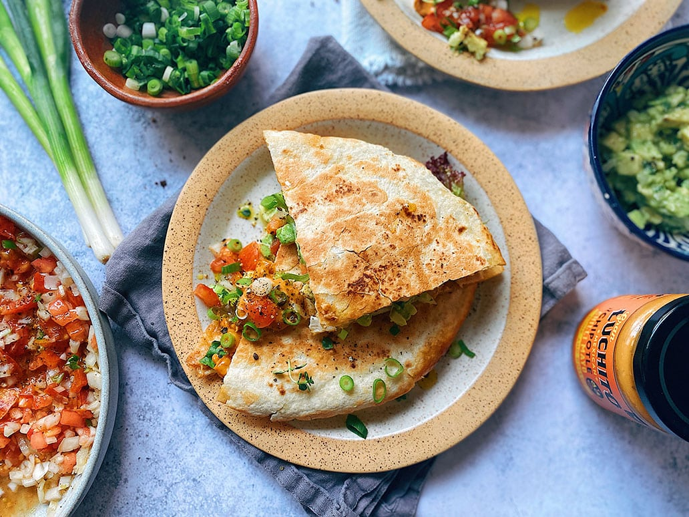

Quesadilla Recipe

Description:
Easy, cheesy, and affordable, quesadillas make a great meal on days when you're busy, tired, or just trying to
make
something the entire family will eat. They're also an easy vehicle for creativity, especially if you're a fan of
mash-up foods. Whether you prefer more traditional ground beef and flank steak quesadillas or fun twists like
cheeseburger quesadillas and cheesesteak quesadillas, you can relax knowing that a dependable, kid-friendly
dinner
is right around the corner. Flip through this gallery to see our collection of top-rated quesadilla recipes
starring
beef.
Ingredients:
- 1 teaspoon butter
- ½ small yellow onion, chopped
- 2 pounds ground beef
- 1 tablespoon Worcestershire sauce
- 1 teaspoon salt
- 1 teaspoon ground black pepper
- ½ teaspoon garlic powder
- cooking spray
- 8 (8 inch) flour tortillas
- 2 cups shredded Colby cheese
- 4 teaspoons ketchup, or to taste
- 4 teaspoons yellow mustard, or to taste
- 4 teaspoons sweet relish, or to taste
Steps:
- Step 1
Heat butter in a saucepan over medium heat; cook and stir onion until slightly tender, about 5 minutes.
Add
ground beef, Worcestershire sauce, salt, black pepper, and garlic powder; cook and stir until beef is
browned and crumbly, about 10 minutes. Remove from heat, drain liquid from beef, and let sit for 2 minutes.
- Step 2
Heat a griddle or flat pan over medium heat and spray with cooking spray.
- Step 3
Place 1 tortilla on the hot griddle, top with some of the Colby cheese, 1/4 of the beef mixture, 1 teaspoon
ketchup, 1 teaspoon mustard, and 1 teaspoon relish. Top with more Colby cheese and 1 tortilla. Flatten the
quesadilla with your hand.
- Step 4
Flip quesadilla with a spatula and cook until browned and cheese is melted, 3 to 5 minutes more. Cut
quesadilla into 4 pieces. Repeat with remaining tortillas, ground beef, cheese, ketchup, mustard, and
relish.